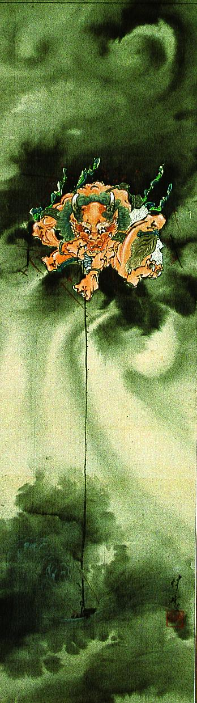

← 图鉴索引

黒雲の上から鉤爪を垂らす赤鬼。虎皮のすねあてを付けている。
著作者：河鍋暁斎／出典：親書誌：A5_pushkin_0051：（雷神図；ライジンズ）／日付：2011／資源識別子：A5_pushkin_0051_0001_0000
Copyright (c)2010- International Research Center for Japanese Studies, Kyoto, Japan. All rights reserved.